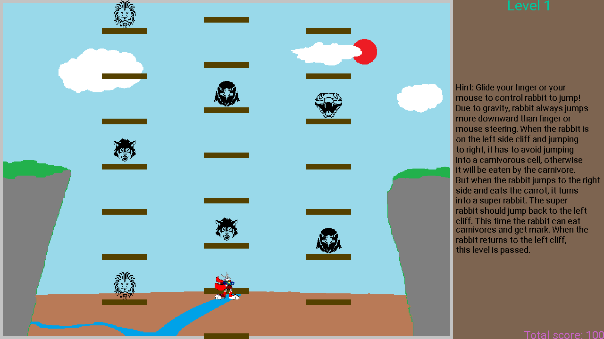

超級小白兔遊戲，是一只小白兔從一側懸崖通過若幹部電梯跳到另外一側懸崖。每部電梯都是一串單元房間。在一些單元房間中間有捕食的野獸，比如鷹啊老虎之類的。當小白兔從左側懸崖跳往右側懸崖時，它只能在沒有野獸的房間中短暫停留，否則它就會被野獸吃掉。不僅如此，如果小白兔落下的位置正好卡在兩個單元房間之間，或者小白兔在一個單元房間停留太久以至於那間單元房跟隨電梯移出了允許小白兔跳動的空間，玩家就失敗了。
當小白兔到達另一側時，它就會變成超級小白兔。這時，它可以跳入捕食者的房間吃掉捕食者。當它跳回原來出發的那一側懸崖，玩家就通過了這一關可以進入下一關了。
超級小白兔遊戲在邏輯上比貪吃蛇遊戲和銷寶石遊戲要復雜。但是，和另外兩個遊戲一樣，超級小白兔遊戲也通過使用緩存圖像的辦法最小化了直接在屏幕上繪畫的次數。所以，這個遊戲實際運行很流暢，甚至比銷寶石遊戲還要流暢。
遊戲的代碼和輔助文件已經和其他示例遊戲一起被打包。請點擊此處下載壓縮包。解壓縮之後將game_examples目錄拷貝到和JMFPLang.jar文件同一個目錄的scripts文件夾中，如下圖所示。

遊戲的源代碼文件，也就是super_bunny.mfps位於game_examples目錄的supper_bunny子文件夾。它的輔助文件也在該文件夾中。要運行遊戲，只需啟動JMFPLang.jar程序然後在命令提示行中運行gdi_test::game_test::super_bunny::run()。玩家也可以轉到JMFPLang.jar的所在目錄，然後再Windows命令提示符或者Powershell窗口中，或者Linux的Bash提示符中輸入java -jar JMFPLang.jar -f scripts\game_examples\super_bunny\super_bunny.mfps然後運行。
借助MFP語言對Android和安裝有JAVA的PC平臺的雙重支持，本遊戲既可以在安裝有JAVA的PC上運行，也可以在安卓設備上以應用或者獨立腳本的方式運行。以下是該遊戲在兩個不同的平臺上運行的截屏。上面的屏幕截屏是在Windows+JVM平臺上的運行效果，下面的屏幕截屏是在Android平臺上的運行效果。
